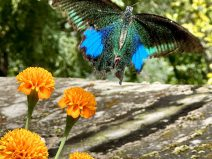
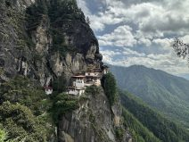

Misión Butan 2024, del 12 al 19 septiembre.
“Reflexiones y Conexiones – Un Viaje hacia la Conciencia” Un viaje espiritual y de aprendizaje de 7 días en Bután
Coste total de viaje, en dolares, 3.990 $
En los dos botones siguientes puede descargar los PDFs con el registro para solicitar el viaje (existen plazas muy limitadas) y para presentar la solicitud del Visado y poder viajar a Butan.
Descargar PDF · Solicitud de viaje
Descargar PDF · Solicitud de visado
En las pestañas siguientes puede obtener más información sobre las actividades y contenido del viaje , así como para conocer el proceso, para el registro y datos de contacto, para cualquier información adicional.
- Descripcion Viaje
- Proceso de Registro
- Información y Contacto
En el mundo actual, acelerado, cada vez más turbulento y distraído, t e invitamos a unirte a nosotros en un viaje reflexivo hacia el autodescubrimiento.
El Centro GNH Bután, en colaboración con nuestros socios de Creative Universe y Hunt Family Foundation, han co-creado un programa muy especial para ayudarte a conocerte a ti mismo a un nivel más profundo y compartir tu camino espiritual con personas de ideas afines. Junto con una introducción a la filosofía de la Felicidad Nacional Bruta, el programa aspira a inspirar, infundir y despertar tu naturaleza interior, desatar tu energía creativa y expandir tu corazón. Este programa está diseñado para la transformación.
Las sesiones seleccionadas se centrarán y abordarán lo siguiente:
- ¿Cómo pueden la visión y los valores de la FNB traducirse en acciones individuales y colectivas que promuevan el bienestar de toda la vida?
- Explorando la felicidad nacional bruta en Bután y sus aplicaciones a nivel personal, organizacional y nacional.
- Reunirse con expertos locales de Bután, alojarse en una granja local, visitar proyectos, personas y espacios sagrados inspiradores, conectarse con antepasados y lugares de mayor potencial.
- Cultivar habilidades de felicidad personal y colectiva, propósito sagrado, atención plena y compasión, escucha profunda y bienestar integral.
- Conexión con la Fuente a través de tiempo a solas en la naturaleza, incluida una peregrinación a la montaña para explorar cómo manifestar sus aspiraciones en el mundo exterior.
Nuestras exploraciones nos llevarán a Thimphu, Punakha y Paro, e incluirán reuniones con expertos locales de FNB y butaneses. Nos alojaremos en una encantadora casa patrimonial rural para experimentar la vida familiar butanesa, caminatas por la naturaleza prístina, meditaciones guiadas y conversaciones con maestros espirituales butaneses y una peregrinación al monasterio sagrado del Nido del Tigre.
Evento paralelo especial y viaje sensorial a Thimphu Tsehchu, Un festival de enseñanzas budistas sobre la vida y la muerte que se representa a través de danzas de máscaras. Estos son eventos importantes en la vida de los butaneses porque brindan la oportunidad de sumergirse y limpiar el mal karma y recordarles lo que pueden hacer con sus vidas. Participar en esto se considera una gran bendición.
Proceso de registro para solicitar el viaje:
Los participantes deberán completar el proceso de inscripción en el PDF del Formulario de Inscripción que se puede descargar en el botón superior a este cuadro; y también encontrará el botón de descarga del PDF para la solicitud de VISADO para Bután.
La tarifa de 3.990 dólares cubre todos los costos del programa , visa, permisos de viaje, transporte, alojamiento y todas las comidas en Bután.
Regístrese ahora para asegurar su plaza, el cupo es limitado. Para registrarse y obtener más información, comuníquese con: Sra. Anisha Ghalley, Centro GNH de Bután anisha@gnhcentrebhutan.org
Al finalizar, el siguiente paso es depositar el 50% de la tarifa del programa inmediatamente para confirmar su plaza y el 50% restante antes del 31 de marzo de 2024.
Estancias prolongadas
Para aquellos participantes que deseen quedarse unos días adicionales, estaremos encantados de recomendarles un agente de viajes local que pueda organizarlo con usted. Como se trata de una estadía prolongada personal, el participante tratará directamente con el agente de viajes y el GNH ya no estará involucrado. Sin embargo, GNH le ayudará a garantizar que su visa se extienda para adaptarse a esto.
Para registrarse y obtener cualquier información, solo se realizará por correo electrónico con la Sra. Anisha Ghalley , Centro GNH de Bután en su email: anisha@gnhcentrebhutan.org
La página oficial de comunicación de este viaje (en inglés) está accesible en este link: https://www.gnhcentrebhutan.org/reflections-connections-a-journey-into-consciousness/
Toda la organización, comunicación y proceso de este maravilloso viaje se lleva a cabo desde el Centro GNH de Butan, por lo que la única vía de comunicación es a través del correo electrónico indicado al principio de esta nota; GNH Spain solo realiza la labor de divulgación del viaje, sin asumir responsabilidad alguna más allá de esta comunicación.


